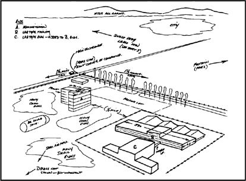

Hal Puthoff, as a naval officer working at the National Security Agency in the early 1960s.
Russell Targ and Hal Puthoff at SRI.
Ingo Swann, who was Puthoff’s first test subject.
CIA scientist Sidney Gottlieb. His Technical Services Division gave Puthoff a $50,000 contract in late 1972. [AP/Wide World]
Uri Geller, who perplexed SRI and CIA officials during 1972–74. [Geller Enterprises]
CIA scientist Richard Kennett (l) posing with Pat Price and Hal Puthoff, after a successful glider-to-ground remote-viewing experiment near Menlo Park. Smiles (and plaid trousers) all round.
Satellite dishes at the Pentagon/NSA facility near Sugar Grove, West Virginia, as it looks today. The underground facility described by SRI remote viewers is nearby.
Some of the data generated by Ingo Swann and Pat Price on the Sugar Grove site in June 1973. They were accurate enough for the Pentagon to launch a security investigation. [CIA]
A CIA sketch, based on a spy satellite photograph, of a secret Soviet R&D facility south of Semipalatinsk. CIA officials brought the coordinates of this target to Pat Price at SRI in June 1974, and asked him to remote-view it. [map: DOD; sketch: CIA]
Price’s lengthy description of the Semipalatinsk target included a sketch of an eight-wheeled crane (l) which closely matched the crane at the site. Price also described welding work on large steel spheres (r). The CIA didn’t know about the spheres at the time, but later confirmed their existence with spy-satellite images. [CIA]
John McMahon, chief of the CIA’s Office of Technical Service during 1974–76, and later the agency’s deputy director. McMahon was a major supporter of the RV program, and kept an open mind about psi in general. At a party in 1983, he appeared to bend a spoon using psychokinesis. [Ronald Reagan Library]
“Norm Everheart,” a technical operations specialist who was one of McMahon’s key lieutenants. “Everheart” fed intelligence taskings to Pat Price during 1974–75, and later to the remote viewers at Fort Meade.
Dale Graff (top r) asked remote viewers to find a downed Soviet Tu-22 “Blinder” bomber (top l) in the jungles of Zaire. [Graff: ABC Nightline; Tu-22: DOD]
President Carter with (I to r) National Security Adviser Zbigniew Brzezinski, Vice President Walter Mondale, and CIA Director Stansfield Turner. Turner briefed an amazed Carter on the participation of remote viewers in the successful Tu-22 recovery. [White House]
National Security Council aide Jake Stewart, who had direct access to President Carter and other top officials. Stewart telephoned SRI with a special task in July 1980. He needed a remote viewer to describe the whereabouts and mental state of a certain person of interest to the NSC. [U.S. Navy]
Stewart’s task was given to remote viewer Keith Harary (l). Harary described a thin, bearded man with a disabling neurological illness who was about to travel somewhere by plane. [Fortean Picture Library]
The target was American hostage Richard Queen (r), then held by Islamic militants in Iran. Queen, who suffered from multiple sclerosis, was unexpectedly put on a plane by the Iranians two days later. Queen is shown here at a White House reception for the returned hostages in February 1981. [Ronald Reagan Library]
Buildings 2561 (l) and 2560 (r), where the Fort Meade remote-viewing unit was based from 1978 to 1995.
An INSCOM memo from 1981 recounts some of the unit’s early bureaucratic history. [U.S. Army]
Major General Ed Thompson, Army Assistant Chief of Staff for Intelligence, 1977–81, and a key figure in the establishment of the Fort Meade unit. [U.S. Army]
INSCOM officer Skip Atwater, who first suggested the RV unit, and served as its operations officer from 1978 until his retirement in 1987.
Mel Riley, at Fort Meade, getting his sergeant first class stripes from Lieutenant Colonel Scotty Watt (l, in civilian clothes), and (r) Colonel Robert Keenan, the head of SED. [U.S. Army]
Chinese nuclear testing range at Lop Nor. In the summer of 1979, remote viewers at Fort Meade and SRI described a failed nuclear test here. [DOD map, CIA photo]
Fort Meade remote viewer Joe McMoneagle (r) peeked inside a building at Severodvinsk shipyard in 1979, and saw something the U.S. intelligence community had never seen before: a new Soviet “Typhoon”-class submarine, the largest in the world. [map, sub: DOD]

A sketch drawn by Joe McMoneagle in a remote-viewing session. Unknown to him, the target was Lawrence Livermore Laboratory. The sketch, which is generally accurate, shows the kind of detail that can be produced by some remote viewers. [DOD]
The Monroe Institute, in Virginia’s Blue Ridge Mountains, where remote viewers and other INSCOM officers experimented with altered states.
Major General Albert Stubblebine, INSCOM commander and paranormal enthusiast. [U.S. Army]
Colonel John Alexander, holding a fork that a fellow officer apparently bent by psychokinesis at an INSCOM gathering in 1983. [Channel Four TV]
Ed Dames, who joined the RV unit in 1983, and was trained by Ingo Swann.
Remote viewer Paul Smith, one of Dame’s classmates.
Lyn Buchanan, hand-picked by General Stubblebine for his supposed skills at psychokinesis.
Major General William Odom, who clashed with Stubblebine and eventually helped to force his resignation. [U.S. Army]
The end of Stubblebine’s reign at INSCOM was marked by memos like this one, curtailing the use of Monroe Institute “Hemi-Sync” tapes.
Major General Harry Soyster, an Odom ally and an opponent of the remote-viewing program. He succeeded Stubblebine as head of INSCOM, and kicked the remote viewers out. They landed safely at the DIA, but a few years later, they were doomed again when Soyster received a third star and became DIA’s chief. [U.S. Army]
Other opponents of the remote-viewing unit included the CIA’s Bob Gates (far l), and Defense Secretary Frank Carlucci (next to Reagan) who unleashed his inspector general on the Fort Meade remote viewers in 1988. [Ronald Reagan Library] But with the help of five powerful senators (below), the RV program managed to stay alive until the mid-1990s.
Robert Byrd (D-W. Va.)
Daniel Inouye (D-Hawaii)
John Glenn (D-Ohio)
William Cohen (R-Maine)

Ted Stevens (R-Alaska)
Ed Dames, on Rodeo Drive in Beverly Hills. [Channel Four TV]
Skip Atwater, on the job at the Monroe Institute.
Mel Riley, taking it easy in Wisconsin.